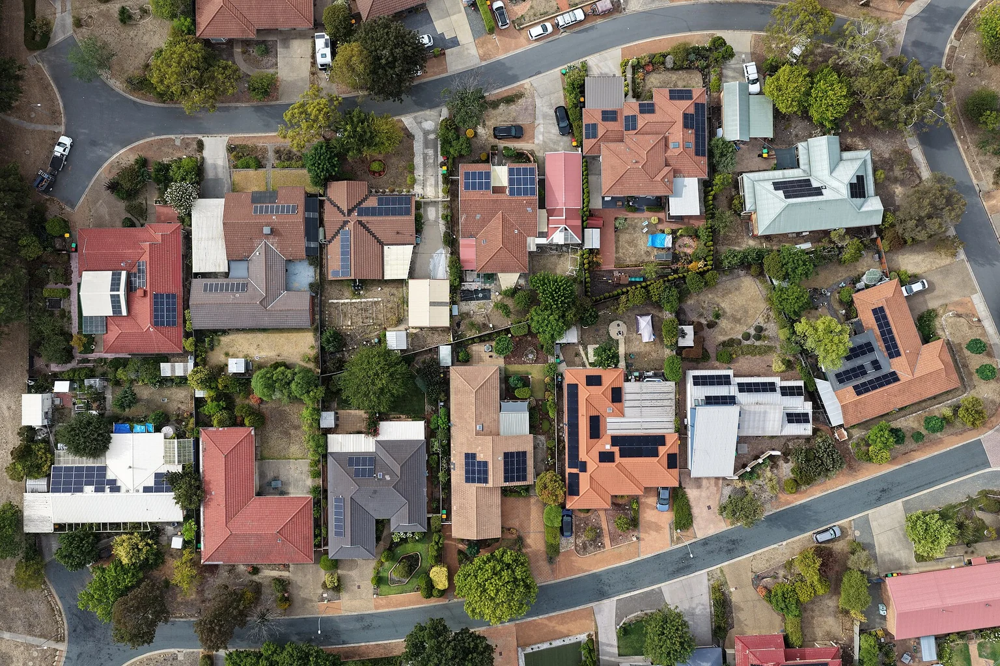

Planning laboratory · Costs, income and shared resources
Make the
numbers speak.
Compare an illustrative operating model, the existing lease reference and an optional compute scenario, each in its own terms.
Working exploration · Brisbane · 7 November 2026
Suburban rooftops with solar panels in Canberra, photographed on 7 February 2026.
Image credit ↗An editable operating scenario
Give each cost and income stream a home.
A shared establishment can combine provider contributions, commissioned programmes, memberships and other agreed funding. Compare those amounts with the people, premises and continuing service they support.
The starting inputs below are illustrative scenario values. They describe neither a proposed lease offer nor committed funding. Keep the initial cash needed for setup visible alongside the annualised planning reserve.
Your working scenario
annual funding gap under the stated assumptions
- Annual premises contribution
- A$300,000
- Annual loaded staffing cost
- A$800,000
- Annual recurring operating costs
- A$1,280,000
- Annualised setup / renewal allowance
- A$60,000
- Total annual planning requirement
- A$1,340,000
- Proposed annual income
- A$816,000
- Member contributions within that income
- A$216,000
- Total paying members to balance this scenario
- 1,028
- Scenario surplus
- A$0
Income = proposed programme income + members × monthly contribution × 12.
Gap = max(0, requirement − income).
A cash-flow forecast must also place deposits, setup payments, receipts and reserves in their actual months. Grants, debt, guarantees, in-kind support and service income have distinct effects.
Existing lease reference
Keep the QPS commitment in its own account.
The CCC report records a starting annual lease figure of A$5.8 million, flat 4% annual indexation and a 15-year term. This reference calculator shows the arithmetic by lease year.
Your working scenario
monthly reference amount for the selected lease year
- Annual reference amount
- A$6,273,280
- Sum across the stated term
- A$116,136,808
Monthly reference = annual amount ÷ 12.
Term sum adds each indexed annual amount.
This reference is distinct from the amount a civic operator might agree to contribute. It does not establish a community tenancy, current invoice or sublease entitlement.
CCC Investigation Sphynx, November 2026, timeline entry at PDF page 21.
Optional technical module
Compute needs its own workload and site case.
The Missing Middle plan uses A$6 million as an initial installed node allowance. Use this separate module to explore one technical scenario; it is not automatically added to the civic operating model.
Your working scenario
initial infrastructure capital in this optional scenario
- Average facility load · kW
- 86.4
- Annual energy · kWh
- 756,864
- Annual energy charge at stated rate
- A$189,216
Annual energy = average kW × 8,760 hours.
Energy charge = annual kWh × A$/kWh.
Site power, cooling, loading, handling, fibre and the actual workload determine the installation. This scenario uses authored planning assumptions rather than a specification or current supplier quote.
Installing the Missing Middle: economics · Sovereign Capacity Lab.
Different accounts, different purposes
Three A$6 million figures can mean different things.
| Figure | Basis | What belongs in this model |
|---|---|---|
| Approximately A$6m a year | Rounded reference at A$500,000 a month for the whole property. | Use the lease-reference module for indexed amounts and dates. |
| A$6m initial capital | The authored installed-compute-node planning allowance. | A selected technical module with its own capital and operating case. |
| A$6m annual programme guide | 500 Queens: A$5m enterprise grants plus A$1m incubator operations, using rounded 2021 inputs. | Update the local programme costs; keep enterprise grants separate from premises and staffing. |
C-Hour recognises voluntary human time. Community-chosen thanks and reciprocity sit alongside the financial accounts and the record of actual outcomes.